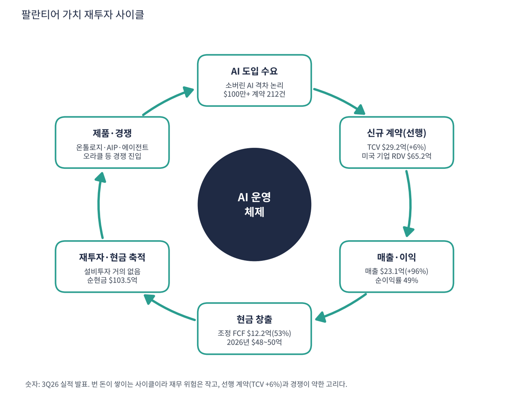

팔란티어는 미국 정보기관·국방부의 데이터 분석 소프트웨어(고담)로 시작해, 기업용 데이터 운영 플랫폼(파운드리), 이를 AI 모델과 연결하는 AI 플랫폼(AIP), 소프트웨어 배포 인프라(아폴로)를 파는 회사다. 2023년 AIP 출시 후 '부트캠프'(고객이 며칠 만에 실제 업무에 AI를 적용해 보는 현장 워크숍)로 기업 고객을 빠르게 늘렸다. 2025년 S&P 500에 편입됐다. 데이터센터를 짓지 않는 소프트웨어라 매출이 거의 그대로 현금이 되는 구조다.
| 항목 | 내용 |
|---|---|
| 종목 | Palantir Technologies (PLTR) · NASDAQ · 소프트웨어 · 2003년 설립 · 본사 콜로라도주 덴버 |
| 시가총액 | 약 $3,864억 · TTM PER 112배 · P/S 53배 (11/6 종가 $160.38) |
| 최근 분기(3Q26) | 매출 $23.1억(+96%), GAAP 영업이익 $10.9억(47%), 순이익 $11.3억(49%), 조정 FCF $12.2억(53%), 룰 오브 40 점수 158 |
| 다음 분기 가이던스 | 4Q26 매출 $26.49~26.53억(+88%), 조정 영업이익 $16.4억. 2026년 매출 $85.3억(+91%), 조정 FCF $48~50억 |
| 대형 계약 | 3분기 $100만 이상 212건, $500만 이상 107건, $1,000만 이상 64건 |
| 다음 실적 | 4Q26 실적: 2027년 2월 초 발표 예정 |
| 직책 | 인물 | 역할·특징 |
|---|---|---|
| 공동 창업자 겸 CEO | 알렉스 카프 | '소버린 AI'와 서방 국방·기업의 AI 도입 격차를 가장 공격적으로 말하는 경영자. 분기 서한의 어조 자체가 회사의 포지셔닝 |
| CFO | 데이비드 글레이저 | 조정 영업이익·조정 FCF 중심으로 '룰 오브 40' 점수를 제시 |
경영 스타일: '고객이 직접 써 보게 하고, 늘어나는 계약을 가이던스로 증명한다'. 부트캠프 방식은 영업 비용이 낮고 확장 속도가 빠르다. 카프 CEO는 "소버린 AI 흐름이 지난 30년 중 가장 극적인 승자와 패자의 분리를 만들고 있다"고 말했다. 실행 면에서는 가이던스를 분기마다 올리는 패턴이 이어졌다. 이번에도 2026년 매출 $85.3억(+91%), 미국 기업 매출 $35.6억 이상(+143%)으로 상향했다.
기업 데이터를 공장·부품·주문·환자 같은 현실 개념과 관계의 지도(온톨로지)로 정리하고, 그 위에서 어떤 LLM이든 연결해 AI 에이전트가 승인·주문·일정 조정 같은 실제 행동을 하게 만든다. 이것이 경쟁사가 따라 하기 어렵다고 회사가 보는 차별점이다.
모델(오픈AI·앤트로픽)과 인프라(클라우드) 사이에서 실제 업무를 연결하는 층을 차지하는 것이 목표다. 오라클이 온톨로지 자동 생성을 내세운 것은 그 층의 가치를 경쟁사도 인정했다는 뜻이자 경쟁이 시작됐다는 뜻이다.
| 분기 | 매출 | YoY | GAAP 영업이익 | 순이익 | 순이익률 | 조정 FCF (마진) | 특이 사항 |
|---|---|---|---|---|---|---|---|
| 2024.4Q | $828M | +36% | – | $79M | 9.5% | – | |
| 2025.1Q | $884M | +39% | $176M | $214M | 24.2% | – | |
| 2025.2Q | $1,004M | +48% | $269M | $327M | 32.6% | – | 첫 $10억 분기 |
| 2025.3Q | $1,181M | +63% | $393M | $476M | 40.3% | – | |
| 2025.4Q | $1,407M | +70% | – | $609M | 43.3% | – | TCV 사상 최대 $4.26B |
| 2026.1Q | $1,633M | +85% | $754M | $871M | 53.3% | $925M (57%) | |
| 2026.2Q | $1,935M | +93% | $912M | $1,062M | 54.9% | $1,220M (63%) | |
| 2026.3Q | $2,313M | +96% | $1,085M | $1,128M | 48.8% | $1,216M (53%) | 미국 기업 > 미국 정부 |

흐름 요약: 규모가 커질수록 성장이 빨라지는 드문 경우다. 2년 동안 분기 매출이 2.8배가 되는 사이 성장률이 36%에서 96%로 올랐다. 이익률은 정점 부근이다. GAAP 순이익률이 9.5%에서 55%까지 올랐다가 3분기 49%로 조금 내려왔다(영업이익률은 47%). 선행 지표는 약하다. 매출은 +96%인데 신규 계약 총액(TCV)은 +61% → +49% → +6%로 빠르게 둔화했다. 미국 기업 잔여 계약가치(RDV)도 전 분기 대비 +4%($6.24B → $6.52B)에 그쳤다. 4분기 TCV가 사상 최대($4.26B)였던 기저 효과일 수도 있고, 대형 고객의 확장 속도가 느려지는 신호일 수도 있다. 이 보고서는 2025년 4분기와 2024년 4분기 GAAP 영업이익을 확보하지 못해 '–'로 표시했다.
| 고객군 | 돈을 버는 방식 | 3Q26 매출 | 성장 |
|---|---|---|---|
| 미국 기업 | 파운드리·AIP 구독. 부트캠프로 시범 도입 → 전사 확장. 제조·헬스케어·금융·에너지 등 | $984M | +148% |
| 미국 정부 | 국방부·정보기관·보건 당국용 고담·메이븐 등. 다년 계약, 대형 프로그램 | $953M | +96% |
| 해외 | 영국 NHS·NATO 등 동맹국 정부와 해외 기업. 미국보다 성장이 느림 | $376M | +26% |

해외 매출은 전체 매출에서 미국 매출을 뺀 계산값이다. 성장률은 전년 동기 $298M 기준.
성장은 거의 전부 미국에서 나온다. 미국 매출은 $19.4억(+119%)으로 비중이 84%이고, 그 안에서 기업이 정부를 처음 앞섰다. 1년 전 미국 기업 매출($397M)은 정부($486M)보다 작았다. 회사의 정체성이 '국방 소프트웨어'에서 '기업 AI 플랫폼'으로 넘어가는 분기였다. 정부 비중은 여전히 절반에 가까워 예산·정치 변화에 민감하다.
팔란티어가 파는 것은 AI 모델이 아니라 'AI가 실제 업무를 할 수 있게 만드는 운영층'이다. 기업 데이터를 현실 개념과 그 관계로 정리한 온톨로지 위에서 AI 에이전트가 답변이 아니라 행동을 하게 만든다.
| 축 | 내용 |
|---|---|
| 온톨로지 | 데이터를 업무 개념의 지도로 바꾸는 핵심 기술. 회사가 보는 차별점 |
| AIP | 어떤 LLM이든 온톨로지에 연결해 에이전트를 만드는 플랫폼 |
| 국방·소버린 AI | 미국과 동맹국의 군·정보기관 AI 표준. 카프 CEO가 말하는 '소버린 AI'의 핵심 공급자 |
| 배포 방식 | 부트캠프 → 단기 성과 → 전사 확장. 영업 비용이 낮고 확장이 빠름 |


위: 트레이딩뷰 주봉 데이터로 재구성(10·20·40주선). 아래: 트레이딩뷰 공개 차트 일봉 캡처(작도 숨김, 이동평균선·볼린저밴드만 표시).
| 이동평균 | 값 | 종가 대비 | 해석 |
|---|---|---|---|
| 5일선 | $168.16 | -4.6% | 실적 후 급락 반영 |
| 20일선 | $190.12 | -15.6% | 10월 고점권 평균 |
| 50일선 | $185.88 | -13.7% | 8~10월 상승 추세선 |
| 100일선 | $164.26 | -2.4% | 바로 위. 1차 회복 목표 |
| 200일선 | $153.53 | +4.5% | 아직 위. 핵심 지지 |
배열은 20일 > 50일 > 5일 > 100일 > 주가 > 200일이다. 2026년 2월 소프트웨어 업종의 'AI 대체 우려' 매도로 $128, 6/25 $106 연저점(1년 고점 대비 -47%), 8월 2분기 실적(+93%)으로 한 주 만에 $123 → $174, 10/12 $213 신고가, 이후 실적 주에 $188 → $153(-18%) 후 $160에 마감했다.
| 규칙 | 기준 | 현재 값 | 신호 |
|---|---|---|---|
| 장기 추세 필터 | 종가 vs 200일선 | $160.38 > $153.53 | 매수 |
| 중장기 교차 | 50일선 vs 200일선 | $185.88 > $153.53 | 매수 |
| 단기 교차 | 20일선 vs 50일선 | $190.12 > $185.88 | 매수 |
| 돈키언 채널 | 55일 고가 $212.94 / 저가 $152.60 | 중간값 $182.77 아래 | 매도 |
| 1개월 모멘텀 | 21거래일 수익률 | -19.3% (기준 $198.78) | 매도 |
| 3개월 모멘텀 | 63거래일 수익률 | -8.5% (기준 $175.23) | 매도 |
| 6개월 모멘텀 | 126거래일 수익률 | +16.4% (기준 $137.80) | 매수 |
| 12개월 모멘텀 | 252거래일 수익률 | -14.6% (기준 $187.90) | 매도 |
| 종합 (8개 평균) | +0.00 | 중립 |
해석: 이동평균선 기반 신호 3개는 모두 매수이고 가격 모멘텀 신호는 대부분 매도다. 전형적인 '상승 추세 속 조정'이다. 다만 20일선이 빠르게 내려와 1~2주 안에 20/50일 교차가 매도로 바뀔 가능성이 높다(점수 -0.25). 14일 ATR $9.95 (6.2%).
| 가격 | 무엇이 바뀌나 | 의미 |
|---|---|---|
| $153.5 이탈 | 200일선 붕괴 | 장기 추세 필터 매도, 점수 -0.25 이하 |
| $152.6 이탈 | 55일 저점 붕괴 | 200일선과 겹친 이중 지지 붕괴 |
| $175 | 3개월 모멘텀 기준 | 회복 시 매수 전환 |
| $183 ~ 188 | 돈키언 중간값·12개월 기준·50일선 | 회복 시 점수 +0.5 이상 |
| 구분 | 가격대 | 근거 |
|---|---|---|
| 저항 2 | $186 ~ 190 | 50·20일선, 실적 전 가격 |
| 저항 1 | $164 ~ 175 | 100일선, 3개월 기준가 |
| 지지 1 | $152 ~ 154 | 200일선, 55일 저점 |
| 지지 2 | $123 ~ 137 | 8월 급등 전 박스, 6개월 기준가 |
실적은 최고이고 가격은 최고 수준의 기대를 반영한다. P/S 45배(2026년 가이던스)를 정당화하려면 성장률 80~90%가 1~2년 더 이어져야 한다. $155~160에서 40%, $150~153에서 30%를 분할 매수하고 $175 회복 확인 시 나머지 30%를 추가한다(평균 약 $159, 손절 $143 기준 손익비 1:1~1:1.9). 1차 $175, 2차 $190에서 익절한다. $152 종가 이탈이면 추가 매수를 중단하고 $143 종가 이탈이면 손절한다. 확인 신호는 4분기 TCV 반등, 미국 기업 RDV 재가속이다.
| 악재 요인 | 내용 | 강도 |
|---|---|---|
| 밸류에이션 | PER 112배, P/S 53배(2026년 가이던스 기준 45배). 성장 둔화 신호에 주가가 크게 반응(실적 주 -15%) | 높음 |
| 계약 둔화 | TCV +61% → +49% → +6%, 미국 기업 RDV 전 분기 +4% | 중간~높음 |
| 경쟁 진입 | 오라클 AI 데이터 플랫폼의 온톨로지 자동 생성, 하이퍼스케일러·데이터브릭스·스노우플레이크의 에이전트 플랫폼 | 중간 |
| 정부 의존 | 매출의 약 절반이 정부(3Q 미국 정부 $953M). 예산·정치 변화에 민감 | 중간 |
| 주식보상 | 조정 지표와 GAAP 지표의 차이. 희석 관리 필요 | 참고 |
| 티커 | 회사 | 시가총액 | PER(TTM) | PEG | P/S | EPS 성장(YoY) |
|---|---|---|---|---|---|---|
| PLTR | 팔란티어 | $386B | 112.4배 | 0.45 | 53.69배 | +234% |
| MSFT | 마이크로소프트 | $3,940B | 27.7배 | 0.74 | 11.09배 | +36% |
| ORCL | 오라클 | $351B | 18.2배 | 0.37 | 4.70배 | +48% |
| AMZN | 아마존 | $2,804B | 21.0배 | 0.27 | 3.45배 | +75% |
| GOOGL | 알파벳 | $3,476B | 14.9배 | 0.17 | 7.39배 | +89% |
| META | 메타 | $1,560B | 20.8배 | 0.67 | 6.18배 | +30% |
| CRWD | 크라우드스트라이크 | $222B | 적자 | – | 39.83배 | – |
EPS 성장률은 트레이딩뷰 TTM 값이다. 크라우드스트라이크는 GAAP 이익이 거의 0이라 PER이 의미 없어 '적자'로 표시했다.
비교 결론: 팔란티어 PER 112배는 동종 대형 소프트웨어(마이크로소프트 27.7, 오라클 18.2, 알파벳 14.9, 메타 20.8)의 4~8배다. PEG 0.46은 마이크로소프트(0.74)보다 낮지만 알파벳(0.17)·아마존(0.27)보다 높다. 성장은 동종 중 가장 빠르지만(EPS +234%) 가격도 가장 비싼 종목이라, 성장 둔화 신호 하나에 PER이 가장 크게 움직인다.
팔란티어는 적자 기업이 아니다. TTM 순이익 $36.7억, 3분기 조정 FCF $12.2억이라 '런웨이'(남은 현금으로 몇 년 버티나)는 의미가 없다. 대신 가격(P/S 53배)이 성장 둔화에 얼마나 민감한지와 현금 쪽 안전판을 점검했다.
| 지표 | 값 | 계산·출처 | 해석 |
|---|---|---|---|
| 현금 및 단기투자 | $105.7억 | 트레이딩뷰 최근 분기 | 시가총액의 2.7% |
| 총부채 | $2.3억 | 트레이딩뷰 | 순현금 약 $103.5억. 부채 부담 없음 |
| 잉여현금흐름 (TTM) | +$40.5억 | 트레이딩뷰. 1~3분기 조정 FCF 합계 $33.6억 | 설비투자가 거의 없는 소프트웨어 구조 |
| 2026년 조정 FCF 가이던스 | $48~50억 | 회사 가이던스 | 연 매출의 약 57% |
| TTM 영업이익률 | 45.6% | 트레이딩뷰 | 이익의 질이 높음 |
| 기준 | 매출 | P/S | 비고 |
|---|---|---|---|
| 최근 4분기(TTM) | $72.9억 | 53.0배 | 시총 $3,864억 ÷ $72.9억 (트레이딩뷰 11/6 환산 53.7배) |
| 2026년 가이던스 | $85.3억 | 45.3배 | 회사 가이던스 중간값 |
| 4Q26 가이던스 연율화 | $106.0억 | 36.4배 | $26.51억 × 4 (가정) |
| 2027년 매출 +50% (가정) | $128억 | 30.2배 | 2026년 $85.3억 × 1.5 |
| 2027년 매출 +30% (가정) | $111억 | 34.8배 | TCV 둔화가 이어지는 경우 |
| 동종 대형 소프트웨어 | – | – | 마이크로소프트 11.1, 오라클 4.7, 크라우드스트라이크 39.8 |
해석: 2027년 매출이 +50% 늘어도 P/S는 30배다. 마이크로소프트 수준(11배)까지 낮아지는 것은 가정하지 않더라도, P/S 20배로 조정받으면 2027년 매출 $128억 기준 시가총액이 약 $2,560억으로 현재보다 34% 낮아진다(내 시나리오 가정). 실적이 아무리 좋아도 배수가 먼저 움직이는 종목이라는 점이 현금 쪽 안전판($105.7억)보다 훨씬 중요하다.
| 지표 | 값 | 판정 |
|---|---|---|
| EBITDA (트레이딩뷰, TTM) | $33.6억 | 흑자 |
| EBITDA 마진 | 46.0% | $33.6억 ÷ $72.9억 |
| GAAP 영업이익률 (3Q26) | 47% | $10.9억 ÷ $23.1억 |
| 순현금 | $103.5억 | 현금 $105.7억 - 부채 $2.3억 |
| EV/EBITDA | 약 112배 | (시총 $3,864억 - 순현금 $103.5억) ÷ $33.6억 |
EBITDA는 TTM $33.6억으로 흑자이고 마진 46%다. 다만 EV/EBITDA 112배는 이익이 연 2배로 커져도 50배대에 머무는 수준이다.
| 방식 | PER | EPS 성장률 | PEG | 판정 |
|---|---|---|---|---|
| 트레이딩뷰 (TTM, 11/6 환산) | 112배 | +233.7% | 0.46 | 적극 매수 |
| 직접 계산 (분기 순이익 TTM) | 105배 ($3,864억 ÷ $36.7억) | +235% ($10.96억 → $36.7억) | 약 0.45 | 적극 매수 |
| 2026년 기준 (4분기 순이익 $12억 가정) | 약 91배 ($3,864억 ÷ 약 $42.6억) | 약 +162% (2025년 $16.3억 → 약 $42.6억) | 약 0.56 | 투자 적격 |
| 보수적 (2027년 EPS 성장 50%로 둔화 가정) | 약 60배 (2027년 순이익 약 $64억) | +50% | 1.2 | 기준 초과 |
| 스트레스 (2027년 EPS 성장 30%) | 약 70배 | +30% | 2.3 | 기준 초과 |
판정: 트레이딩뷰 PEG 0.46 → '적극 매수' 기준(0.5 이하) 충족, 2026년 기준으로도 0.56으로 '투자 적격'. 그러나 이 PEG는 이익이 2배 이상 늘던 지난 4분기를 기준으로 한 값이라 성장이 둔화되는 순간 가장 크게 올라간다. TCV 증가율이 +6%까지 내려온 만큼 보수적 가정(성장 50%)에서는 1.2로 기준을 넘는다. 4분기 순이익 $12억과 2027년 성장률은 내 가정이며 회사 가이던스가 아니다.

팔란티어 사이클의 엔진은 부트캠프가 만드는 빠른 도입과 확장 계약이다. 도입이 매출과 이익이 되고, 이익이 다시 제품(온톨로지·AIP·에이전트)과 영업 확장에 들어가 다음 도입을 만든다. 설비투자가 거의 없어 번 돈의 대부분이 현금으로 쌓인다는 점이 하이퍼스케일러형 사이클과 반대다.
| 고리 | 현재 숫자 | 고리 강도 | 약해지는 신호 |
|---|---|---|---|
| ① AI 도입 수요 | 카프 CEO의 '소버린 AI' 격차 논리, $100만 이상 212건·$1,000만 이상 64건 | 강함 | 대형 계약 건수 감소 |
| ② 신규 계약(선행) | TCV $29.2억(+6%), 미국 기업 RDV $65.2억(+79%, 전 분기 +4%) | 둔화 | TCV 증가율 한 자릿수 지속 |
| ③ 매출·이익 | 매출 +96%, 순이익률 49%, 룰 오브 40 점수 158 | 강함 | 순이익률이 40% 아래로 하락 |
| ④ 현금 창출 | 조정 FCF $12.2억(53%), 2026년 $48~50억 | 강함 | FCF 마진 50% 아래로 하락 |
| ⑤ 재투자·현금 축적 | 설비투자 거의 없음, 순현금 $103.5억 | 여유 | 경쟁 대응 비용 급증 |
| ⑥ 제품·경쟁 | 온톨로지·AIP·에이전트 확장 vs 오라클 AI 데이터 플랫폼·하이퍼스케일러 | 경쟁 시작 | '충분히 좋은' 대안 등장 |
이 사이클의 구조: 하이퍼스케일러는 번 돈을 공장에 쏟지만 팔란티어는 번 돈이 쌓이는 사이클이라 재무적 위험이 없다. 약한 고리는 ②(선행 계약)와 ⑥(경쟁)이다. 4분기 TCV가 다시 늘면 이 고리는 살아 있고, 아니면 1~2년 뒤 성장률 하락이 현실이 된다.